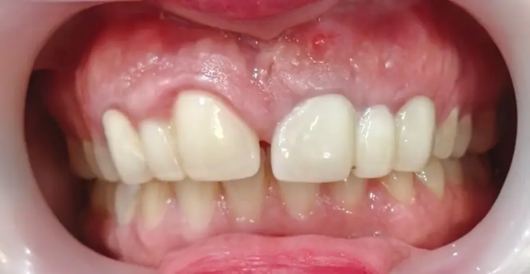

نسخه استخراجشده؛ ترجمه یا تأیید علمی انجام نشده است. وضعیت: captured
بیمار با محدودیت زمانی شدید آمده است و میخواهد بریجهای قدامی را همین امروز خارج کند و درمان زیبایی را فوراً شروع کند؛ از ظاهر لبخندش ناراضی است. در تاریخچه، دندان ۲۱ (یک بالا چپ) سابقهی عفونت و جراحی اپیکال دارد و حالا یک فیستول فعال در مخاط آن دیده میشود.

فیستول فعال روی سانترال چپ، و سانترالهای اورسایز کنار پونتیکهای باریک لترال، نشان میدهند مسئله فقط ظاهر روکشها نیست. کار این ویزیت جدا کردن عفونت اپیکال از توزیع غلط فضا است، و رد کردن شروع فوری زیبایی روی پایهای که هنوز ارزیابی نشده.
رادیوگرافی نشان داد جراحی اپیکال قبلی کاملاً غیراصولی بوده است: هیچ پرکردگی رتروگراد (Retrograde filling) برای سیل کردن انتهای ریشه انجام نشده و فقط به باز کردن و درناژ بسنده شده. سیل آپکس با پرکردگی رتروگراد است که سیستم کانال را از بافت پریاپیکال جدا میکند؛ بدون آن باکتریها همچنان در سیستم کانال ریشه فعالاند و دندان کاندید کشیدن (Extraction) است.
درخواست شروع فوری درمان زیبایی روی پایههای فعلی اکیداً رد شد. به بیمار توضیح داده شد که دندان ۲۱ غیرقابل نگهداری است؛ اما حتی با کشیدن ۲۱ هم، بهخاطر موقعیت دندان ۱۱ (یک بالا راست)، اصلاح زیبایی ممکن نیست.
طرح پیشنهادی، با توجه به افت شدید پروگنوز در صورت استفاده از ارتودنسی، منوط به خارج کردن بریجها و ارزیابی دقیق دندان ۱۱ است. اگر ۱۱ هم کشیدنی باشد یا پروگنوز ضعیفی داشته باشد، با دو واحد ایمپلنت و فاصلهگذاری و توزیع فضای اصولی، مشکل زیبایی و بیومکانیک همزمان برطرف میشود. در غیر این صورت، بدون اصلاح فضا، زیبایی بیمار تا آخر عمر نقص خواهد داشت.
مشکلی که ریشه در توزیع نامناسب فضا (Space distribution) و فقدان دندان دارد، با تعویض صرف روکشها یا بریجها حل نمیشود. نادیده گرفتن فونداسیون بیولوژیک، مثل عفونت فعال اپیکال، و تسلیم شدن در برابر فشار بیمار برای درمان سریع، فقط به شکستهای پیچیدهتر و از دست رفتن اعتماد بیمار در درازمدت میرسد.
نوع سؤال: ساخت کلمه · 5 خانه
حروف منبع: ک · ی · ا · ب · ر